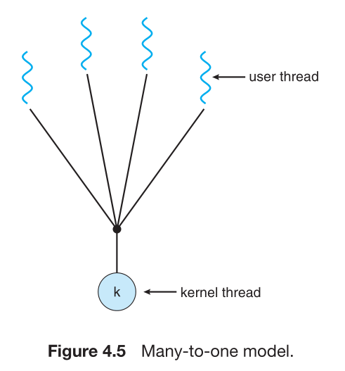

A traditional(or heavyweight) process has a single thread
of control.
If a process has multiple threads of control, it can
perform more than one task at a time.
多threads好處是可以同時處理多個任務
ex. 正在打字時可以同步檢查拼音語法
ex. 一個web server接受client 請求網頁，
如果有多個client請求，就可以避免其他client等待過久的情形。
User threads and kernel threads
User threads are supported above the kernel and
are managed without kernel suppoet.
Kernel threads are supported and managed directly by the
operating system.
relationship
Many-to-One Model

One-to-One Model
Many-to-Many Model
The variation on the many-to-many model still multiplexes many
user-level threads to a smaller or equal number of kernel
but also allows a user-level thread to be bound to a
kernel thread. two-level model
Multithreaded Process
What components of program state are shared across threads in a multithreaded process?